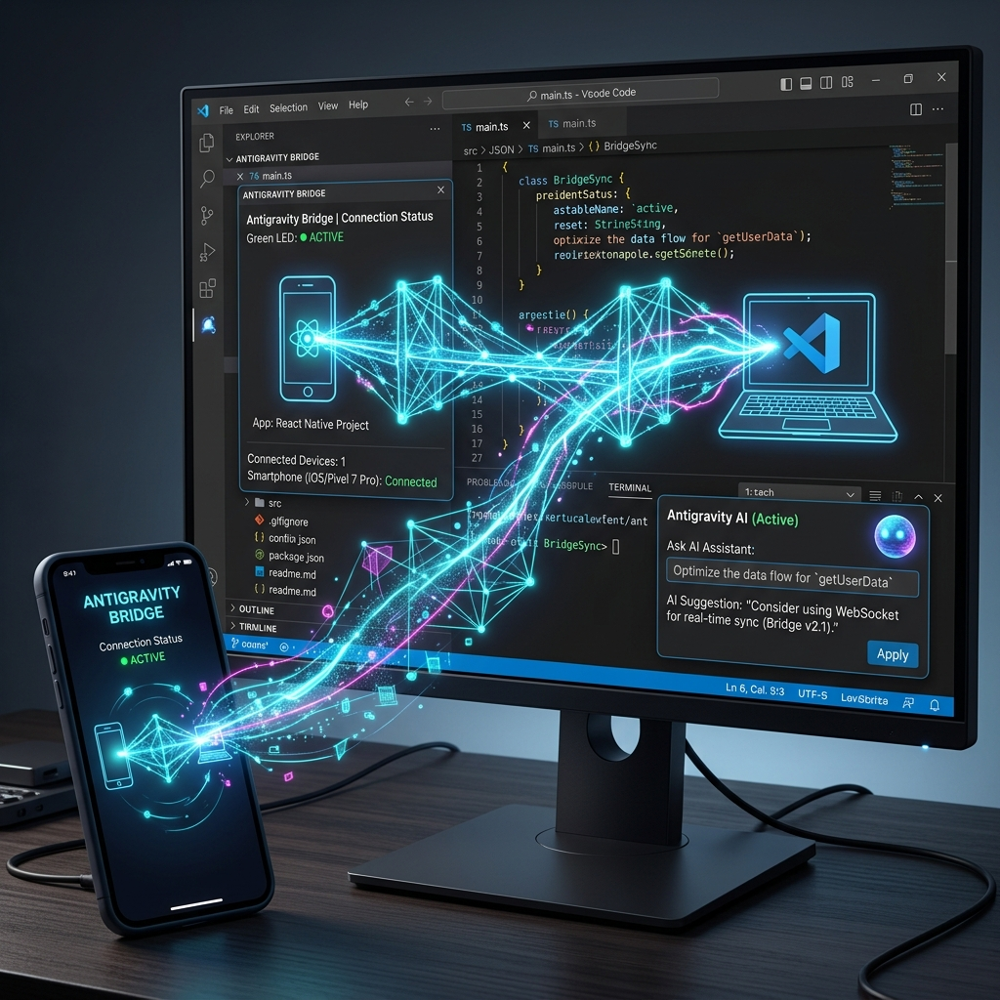
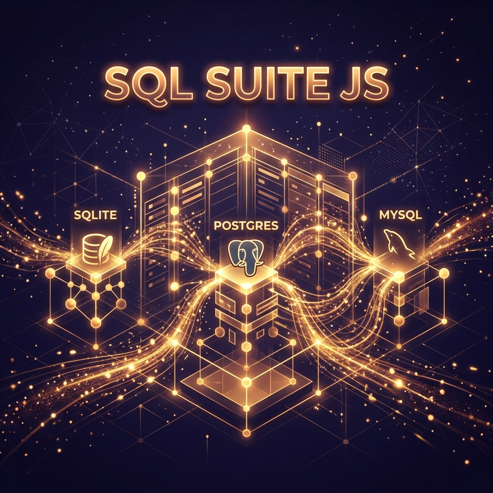
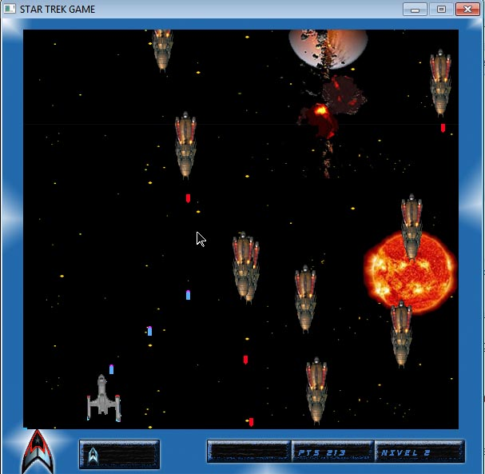

01 // Resumen
Arquitectura de Infraestructura Crítica & Liderazgo Académico
Ingeniero de Sistemas con **14 años de evolución constante** (2012 — 2026). Especialista en el diseño de arquitecturas escalables, creador del **CcMvc Framework** y articulador de soluciones avanzadas con IA. Como **Catedrático del PNFI en la UPPTMBI**, lidero la formación de nuevas generaciones de ingenieros, fusionando el rigor académico con la robustez del desarrollo industrial.
[ 02 // PROYECTOS & DESPLIEGUES ]

Antigravity Bridge
Puente de orquestación IA diseñado para optimizar el flujo de trabajo en entornos de desarrollo industrial.

SQL Suite JS
Abstracción de alta eficiencia para persistencia de datos complejos en ecosistemas JavaScript escalables.
CcMvc Framework
Framework industrial bajo patrón MVC con enrutamiento dinámico, inyección de dependencias y soporte nativo para Smarty y Twig.

Star Trek Tactical Engine
Simulador táctico espacial desarrollado en C++. Implementación de motores de renderizado 2D.
[ 03 // TRAYECTORIA PROFESIONAL ]
Catedrático de Ingeniería PNFI
UPPTMBI - Sede Trujillo
Responsable de las cátedras de Algorítmica, Redes y Desarrollo Web.
Arquitecto de Sistemas & IA
Soluciones Industriales Freelance
Diseño de infraestructuras digitales escalables y soluciones con LLMs.
Evolución Industrial
// 2019: Programador Back End @ Jida Desarrollos.
// 2017: UI Specialist (pfSense Project).
// 2016: Full Stack @ Org. Seguridad Industrial.